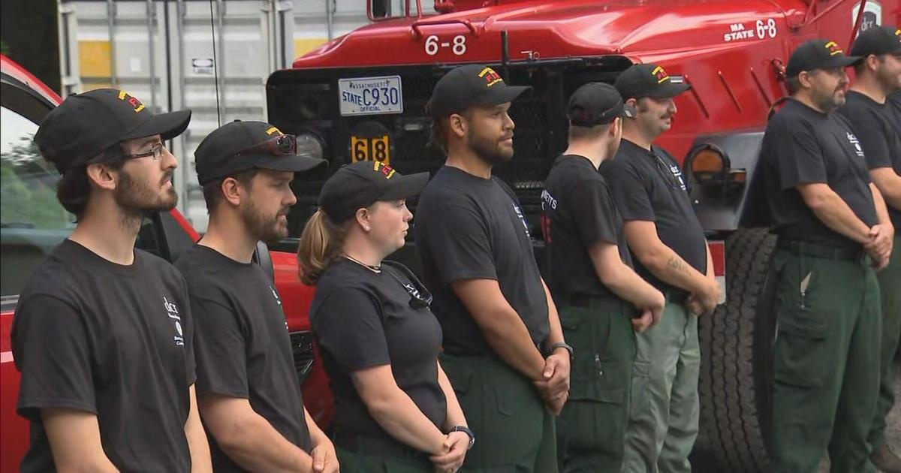

Massachusetts firefighters head to Canada to fight wildfires in QuebecCARLISLE - Firefighters with the state's Department of Conservation and Recreation (DCR) were in Carlisle for a send-off Thursday before they headed to Canada to help fight wildfires in Quebec. Gov. Maura Healey and Lt. Gov. Kim Driscoll met with the 11 firefighters. "We are grateful to all of them for their service, we wish their safe return," said Healey. "It's not only going to make sure that we're helping another province but from our estimation, also helping us get trained when we have instances here," said Driscoll. "It's important work, whether they're doing it here or in Canada." The firefighters plan to spend two weeks in Quebec, where more than 120 wildfires have been burning since the beginning of June. The wildfires have sent clouds of smoke across the Northeast, covering and with a smoky haze. "It doesn't seem like a crew of 11 would have an impact on 124 fires but boy, they do," said Dave Celino, the Chief Fire Warden for Massachusetts DCR. "And so every pair of boots that we can get on the ground up there to help them get those fires contained or under control really helps." The team hit the road just before 11 a.m., making the seven-hour drive to La Touque, Quebec. for more features. |
 |